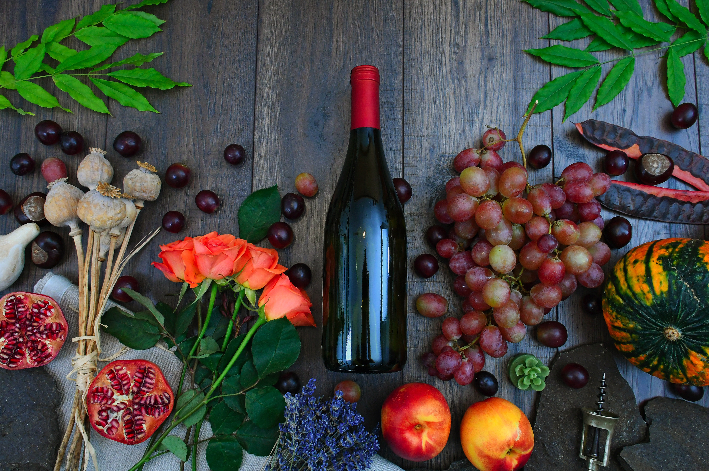
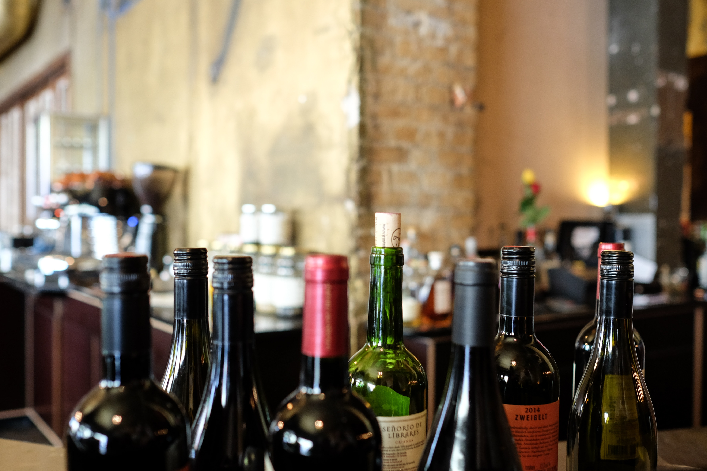
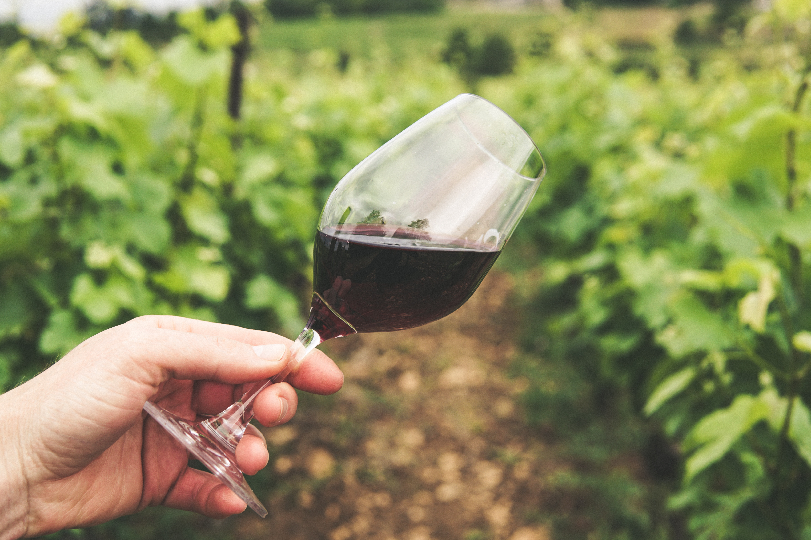

Wine Tasting in California
So what exactly is it about California that lends itself so easily to the growth of wine fruits? There's a few reasons. The first one to examine is climate. We've all long known of the beautiful weather in many areas, indeed absolute arid climate in others, that California is known for. It's also no secret that California produces more and better wine than any other state. If we take a look at the soil quality of California, we se fertility. Fertile soil. This, combined with a steadily warm climate and an ease of irrigation makes for amazing fruit growth. Interestingly enough, the grapes that are grown in Napa Valley are related to the grapes grown in the south of France in other places close to the ocean, with similar climates. Additionally, California wine fruits benefit from the proximity of other types of produce grown nearby. These other fruits, being on the sweeter side, influence the taste profiles of the wine fruits.
But Why California?
All of this must be said mainly because I feel the need to describe why I picked the place I picked. Granted, there are some real competitive places for wine-tasting. There are some places that really have a lot going for them; reviews that swear by the taste, discussions that make you wonder more about the location for living than the wine with the talk of how beautiful and tranquil they are, and videos that make a blind person want to walk through the screen. As a low-budget wine drinker already, I wasn't hard to impress. I chose California for multiple reasons: One, it's in the US, relatively accessible to me especially amongst a list that included overseas places, and lastly, the weather isn't only good for wine fruits, it's great for me! With that I was off to the "Scherrer Family farm&vineyard" in Alexander Valley California.
Other Options
It wasn't easy though. I considered Massachusetts especially considering how close it is in comparison to other places. There were a few overseas options too, but price considerations pushed me away rather quickly. I wanted to not only have a plane ticket and hotel expenses to consider once I landed; souvenirs, bottles of wine for home, and other things were a little more important than the costs that an overseas wine-tasting extravaganza trip would force me to spend. One day, I vowed to myself however, I'd take that overseas trek.
California
Needless to say that the trip was as beautiful as California weather is usually stereotyped to be. It was incredible; The whole valley was Beautiful! There was green everywhere. The ground underfoot even felt different; soft, yet supple. The air was fresh, lighter. The smell of fruit was in the air. I was ready to start tasting!
Friends
Another reason I picked the golden state, and one it took up until I arrived to admit to myself, was because I had friends there. I hadn't seen my friends from this part of the world for a while. I wasn't sure how they would feel about speaking, let alone visiting. The only way to find out though was to reach out, so I did. I was in for an awesome surprise! They were elated to hear from me! We planned to meet up at a restaurant and have an early dinner the same day.
Food by the Ocean
It was like we never separated. My friends Nancy and Trevor were with me in fine arts camp on the east coast several years back. In camp, we got up to all sorts of mischief together. A lot of it included harassing camp staff. They were great! We enjoyed getting thoroughly caught up. Trevor was engaged. Nancy was a realtor for a local company. It was amazing meeting up, and sad too. Sad because I knew I'd have to leave. We made plans to meet again before I left.
Tasting Time!
I tasted wine derived from various types of fruits. There were grape wines:

- Cabernet Sauvignon,
- Chardonnay,
- Merlot,
- Pinot noir,
- blanc,
- Syrah,
- Boxes of two or four
- Gift-wrapped? Yes
- Zinfandel.
There were berry wines. I tried them in the order of what I thought would be best to worse, in that order.
- blueberry
- Blueberry Merlot
- blueberry Xen
- rasberry
- strawberry
- Strawberry Zinfandel
- Strawberry Moscato
- blackberry
But the mango wine was my favorite. It was the most well-balanced and sweetest I had ever tasted! I purchased several bottles. Further, I bought several varieties for my friends and family. I had to thank the wine specialists and the tour guides that helped me on my journey.
In Conclusion
Finally, I did a tour of the valley. I saw mountains, I saw where the valley turned into more farmland; I even met some of the other farmers and the work hands that work on the vineyards. I met up with Trevor one more time. Nancy couldn't make it this time though. She sent her best. I was understanding of course. She had big things going on in life, anything could have happened that could have held her back. We promised to link up the next time I had a taste for California wine. Trevor and I hung out at a few of his favorite live music spots. It was a good time. We too guaranteed each other we'd hang out again when I came back. It was finally time to leave. The flight home was full of good memories and thoughts of returning. I also knew that my friends and family would love what I had bought for them. I couldn't wait to get home! It was an amazing trip.